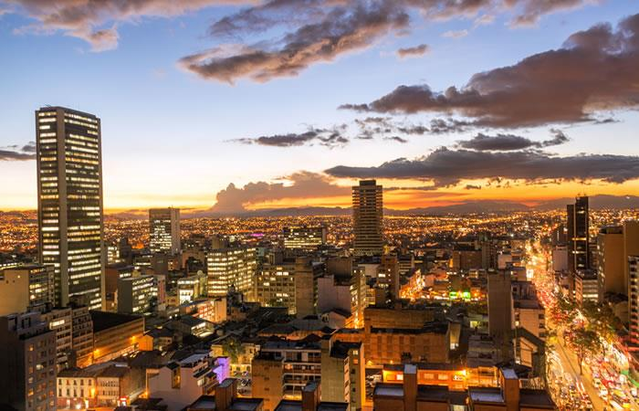

Bogotá
La capital de Colombia, Bogotá, se encuentra en el altiplano andino. Es conocida por su rica historia, museos fascinantes y una animada escena cultural. Descubre la arquitectura colonial en La Candelaria y disfruta de la gastronomía local.